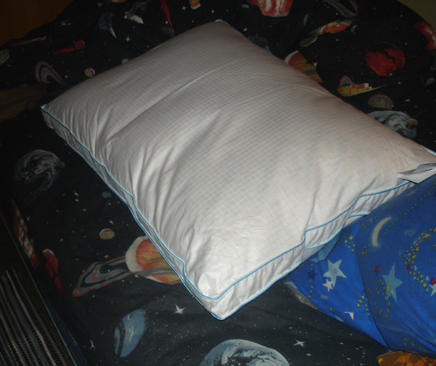
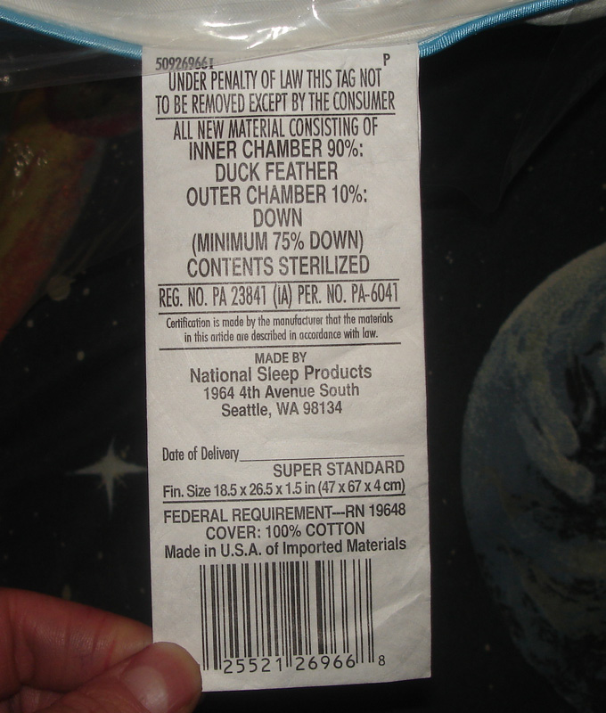
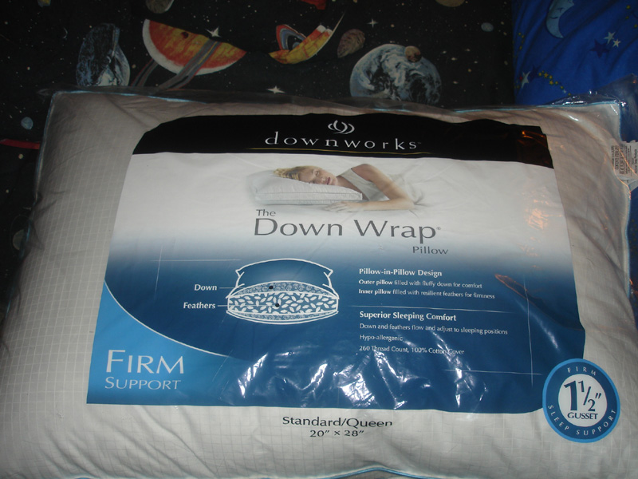
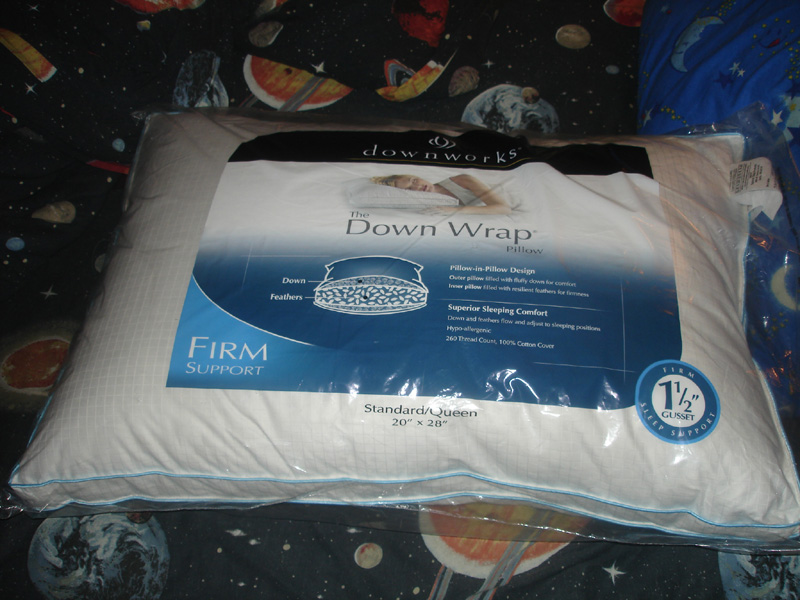
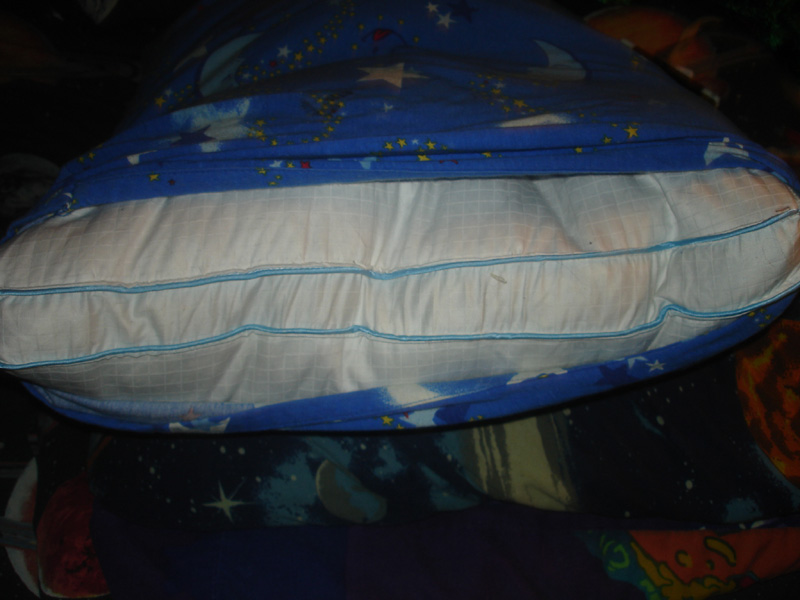
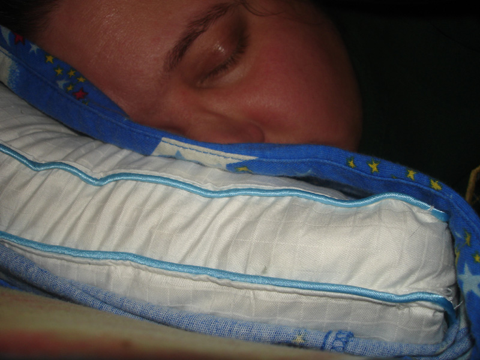

My feather pillows from Walmart
|
DownWorks - downwrap feather filled pillows from Walmart. firm and big queen sized. It have unique case which have grid texture in it. It have nice blue piping around it. They are found in domestic area where all pillows are. I always love feather-filled pillows since I was a kid. I found some good ones at Walmart after I started working there. I bought about 4 or 5 for myself. I had some old feather-filled pillows when I was a kid. my mother got me some new pillows that was cotton or polyester filters filled and it sucked and it dont feel a real pillow to me. I hated all of those pillows that are made with cotton or polyester fillings. sometimes, feather try to escape from the pillow. It is normal for feather to poke out of the pillow sometimes. I remeber my old pillows do that when I was kid.
UPC number: 0 2552126966 8 |





